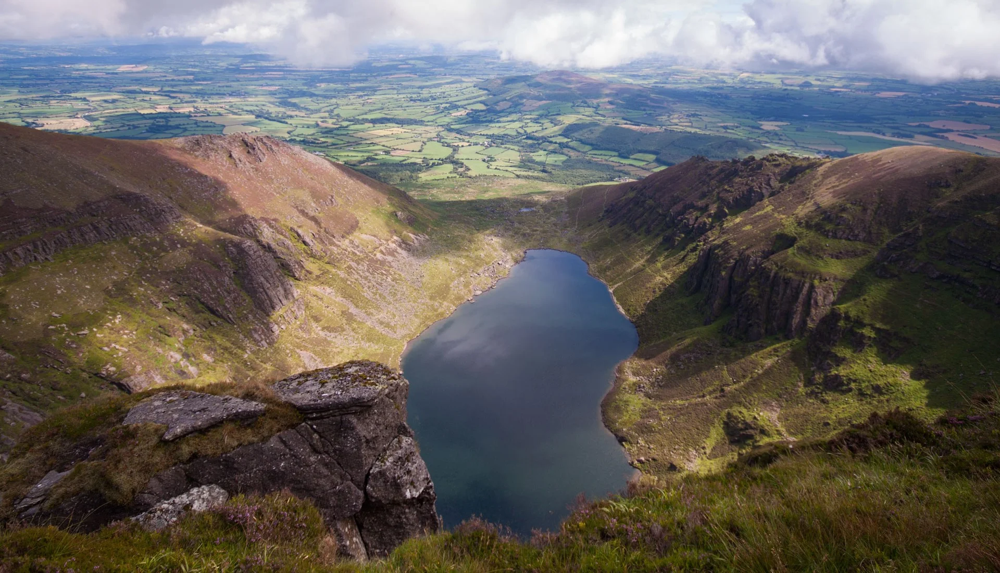
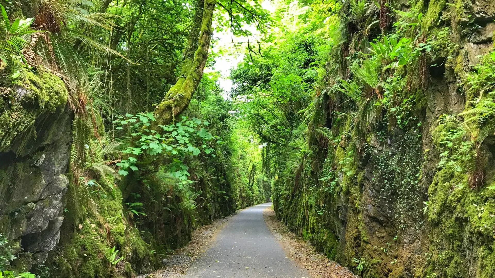
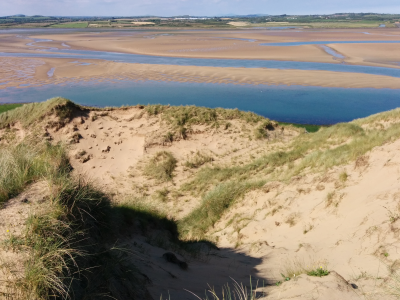
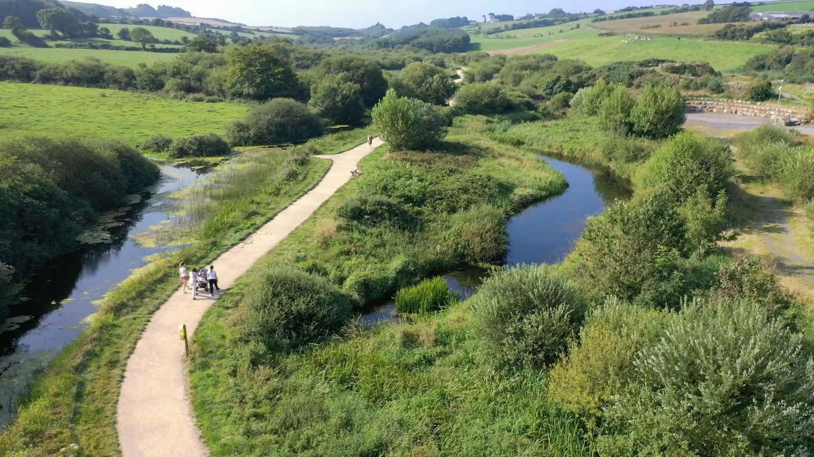

Trails
On the hunt for trails and scenic views in Waterford? Look no further!
No matter what you're looking for, you can find a huge range of trails in Waterford to suit you.
-
Coumshingaun Lough
This trail is one our favourites, the view from above is amazing. It is recommended to have some hiking experience before attempting to do this trail as it is a very strenuous route. It is also recommended that you download the offline map as this route is not signposted very well. You should not do this trail unless you have thoroughly planned beforehand. 
-
Dunmore East Cliff Walk
Content

-
Waterford Greenway
Content 
-
Tramore Sand Dunes
Content 
-
Anne Valley
Content 